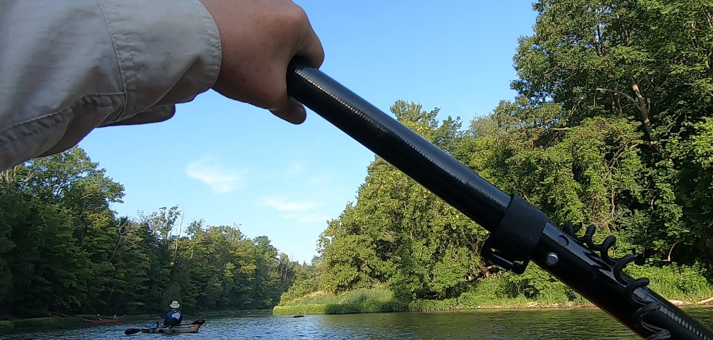

Our Events
- Saturday July 13th 2019
-
Annual TRAA Paddle & Fish
This year's TRAA Paddle & Fish took place on July 13th and we had around a dozen participants from the TRAA, the Forest City Flyfishers and the Western Ontario Fish & Game Protective Association.
It was a beautiful day with the thunderstorms holding off for our after-paddle BBQ.
This year's route took us from Elgin Road 73, through the town of Dorchester to the Lion's Park just west of town.
Most, if not all of us, had never been on this stretch of the South Thames River. Our efforts were rewarded with some of the prettiest scenery that any river has to offer.
- Saturday June 22nd 2019
-
Rainbow Trout Release
We have had a very successful hatch of rainbow trout this year with minimal die-off. However, it was time to say goodbye and turn them loose into their new homes. The donor stream was Dingman Creek.
Everything went smoothly and the weather was glorious.
It was also great to have a member of the London Environmental Network come out to lend a hand and learn a little bit about what the TRAA is all about.
Click here to view an entertaining video of how much fun we had!
- May 16 - 17 2019
-
Children's Water Festival
Fanshawe Conservation Area
The TRAA took part in the "Public Night" portion of the event, Thursday, May 16 from 5:00pm to 8:00pm.
The kids cast at fish targets that we had set up and it was much fun for us as it was for the kids!
Many thanks to The Western Ontario Fish & Game Protective Association for providing the fish targets and the rods, reels and rubber weights.
Well over a thousand people came through the gates before 7:30pm for this event!
Extra-big thanks to those few members who came out to lend a hand.
- Saturday May 4 2019
-
Brown Trout Release

The brown trout were transferred from the TRAA hatchery and released at the same site on Medway Creek as in previous years.
TRAA members loaded up the trout fry into the transfer tank at the hatchery site. We then proceeded to the release site north of London, Ontario.
We were met there by two of the landowners through which this section of Medway Creek flows. They also brought out a large contingent of family and friends to lend a helping hand.
This video gives you a pretty good idea how it went
It was a beautiful day, the stream was in perfect shape and everyone was smiling and laughing. Good times.
- Sunday May 5 2019
-
River Cleanup!
The TRAA be helped out again this year with a cleanup of the shoreline and area of the river near the Komoka Road bridge.
After meeting at the NEW parking lot for Komoka Provincial Park on Gideon Drive, everyone carpooled to the usual stretch around the bridge.
Thank you to all that showed up to help out!
- March 2019
-
Medway Creek Habitat Project
Initial Stream Walk
Those of you who have been involved with the brown trout releases over the past few years may recognize this spot on Medway Creek as the release point.
Those of you who have been attending the last few General Meetings will also know that this is part of a 280-metre stretch on which we will be focusing future habitat rehabilitation efforts. We have met with and have the support of the two landowners through which this stretch of Medway Creek flows.
Back in March we put together a short video of our stream walk on this section of Medway Creek, during which we documented areas in need of work and added our initial thoughts.
If you would like to be involved with TRAA projects like this one or one of the many others that we have ongoing, please Contact Us.